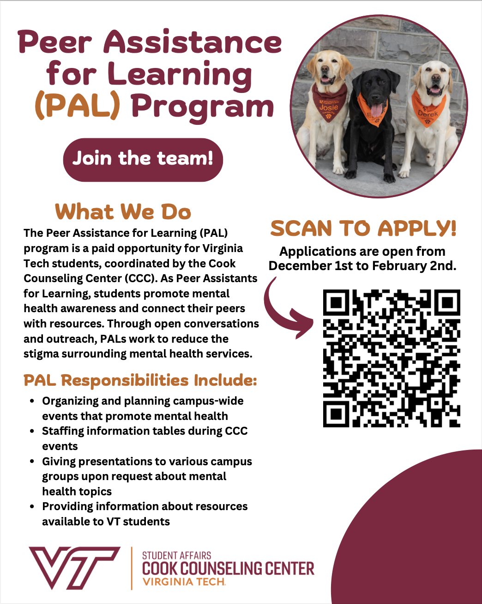

Peer Assistance for Learning Application Flyer
Every year, the Peer Assistance for Learning program requires an updated application flyer, as we try to build stronger pools of applicants. In my first year as a designer for the PAL program, I helped implement and advertise a flyer that brought our applicant pool from 17 to 96 in one academic year!